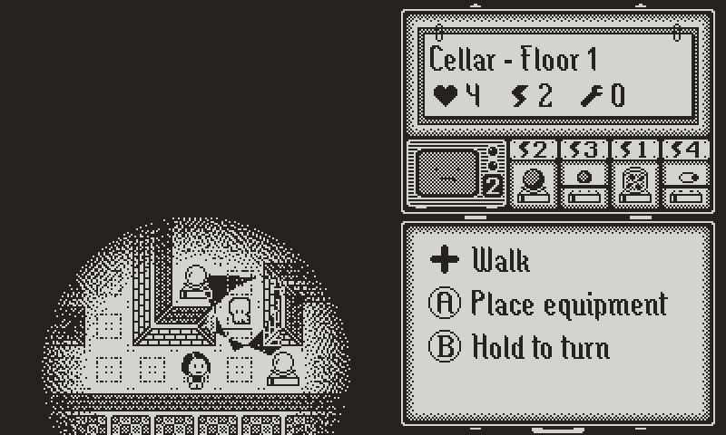
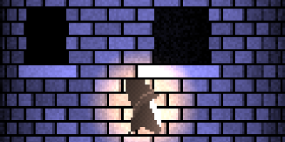
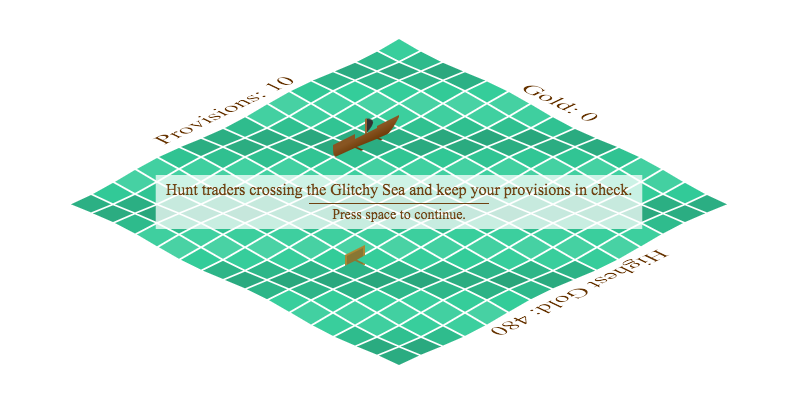

Hi, this is a collection of things I’ve created over the years.
~Rebecca
Games

-
Down the Oubliette
is a dungeon crawler for people who like tower defense games.
-
Sketch, Share, Solve
is the nonogram game for Playdate you can make your own.
-
Quood
is a color matching game inspired by Quod.
-
Donut Snake
is a casual puzzle game for mobile devices but also playable on PC.
-
Mini Tetris
is an attempt to make a Tetris clone that’s as small as possible.
With the help of friends I got it down to 509 bytes.
-
Descent to Madness
is a dungeon crawler created for 1 bit jam
which allowed only a 1x1 pixel output with only two colors.
-
quoDS is a Nintendo DS homebrew game based on
gQuod.
Tools
-
Mcworldtrim
is a tool for Minecraft world management.
If your server is overflowing with chunks that nobody visits
but you don’t want to delete manually, this will help.
I don’t run a server anymore so it’s been untested in Minecraft versions after 1.8.
JS1k
JS1k is a JavaScript code golfing competition with a 1024b limit.
I’ve entered a few demos over the years. Most are games and all are interactive.

JS13kGames
JS13kGames is a JavaScript game development competition with a 13kb limit.
That’s enough to not have to golf the code but not enough to use an existing framework.

Random
-
My GitHub profile contains a random collection of projects in various states.
The interesting ones are also mentioned above but feel free to browse.
-
Once upon a time I bought a Nintendo DS to make music and then I did.
If you’ve been to Vnlla – one of three Minecraft servers I’ve created –
you may know it already. 🙂
-
A long time ago we made music together.
Unfortunately, it ended too soon. RIP, you are dearly missed.